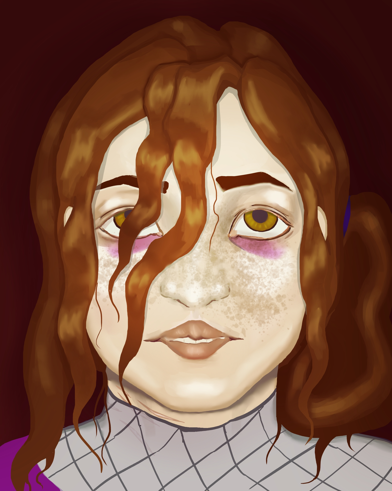
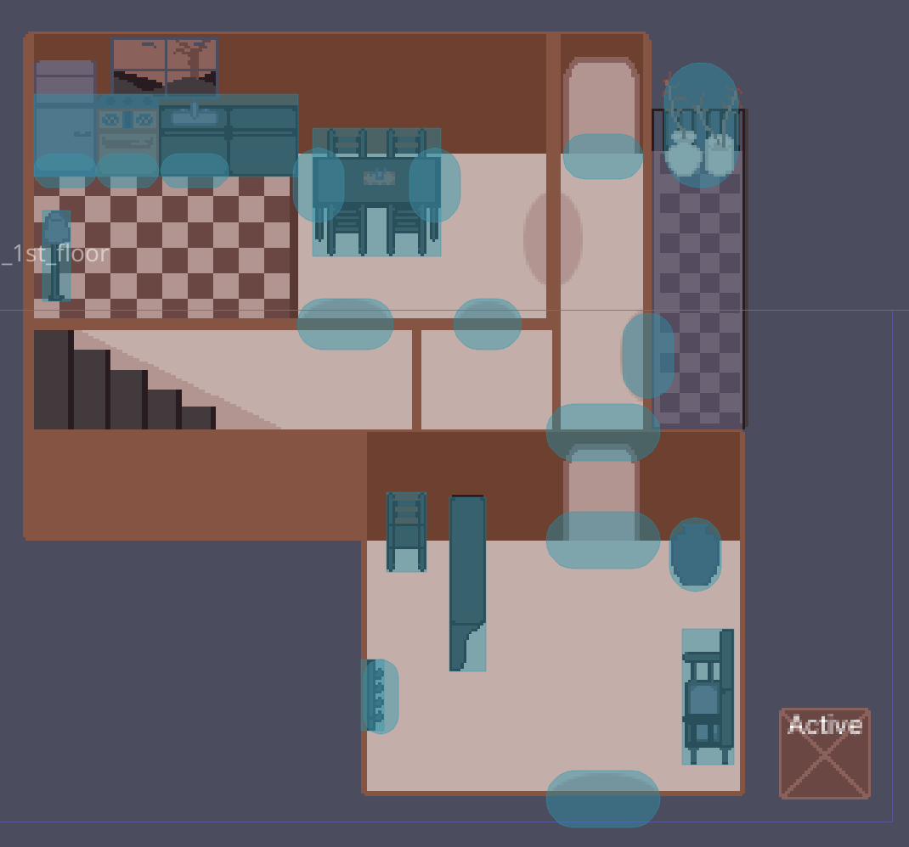
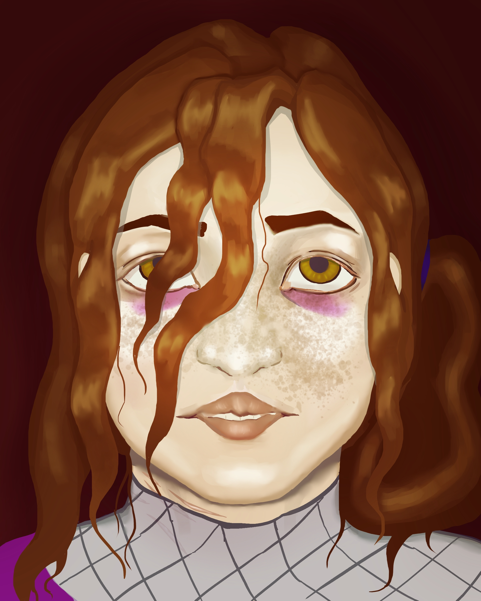
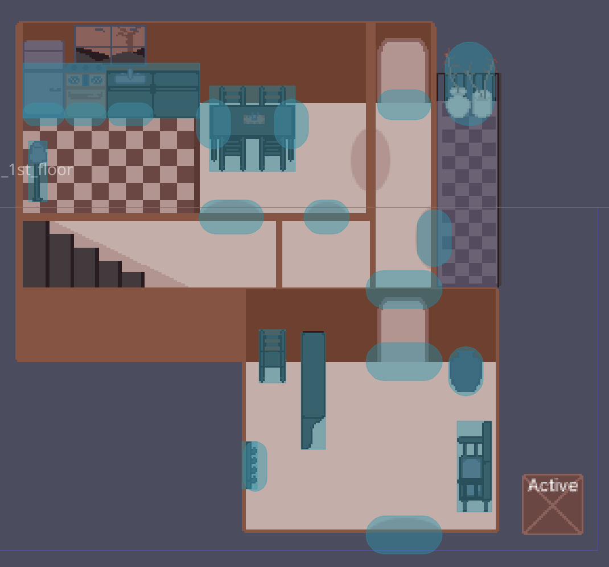

Jorge Salazar
Game Design and Art
Stray Stars (Programmer role)
Portfolio:
 redefine left forehead edge. shade hat. move ref to link.

add neck shading. add color to bottom mouth corners. 2nd pass on hair

redefine left forehead edge. shade hat. move ref to link.

add neck shading. add color to bottom mouth corners. 2nd pass on hair

 cut 1px line at top
cut 1px line at top
 replace with demo if possible
replace with demo if possible
 cut entirely
cut entirely